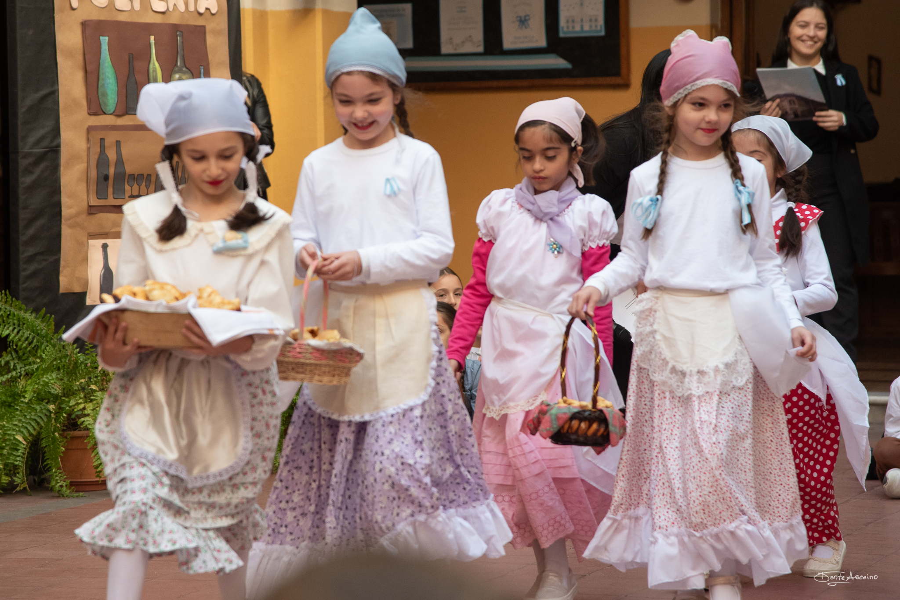
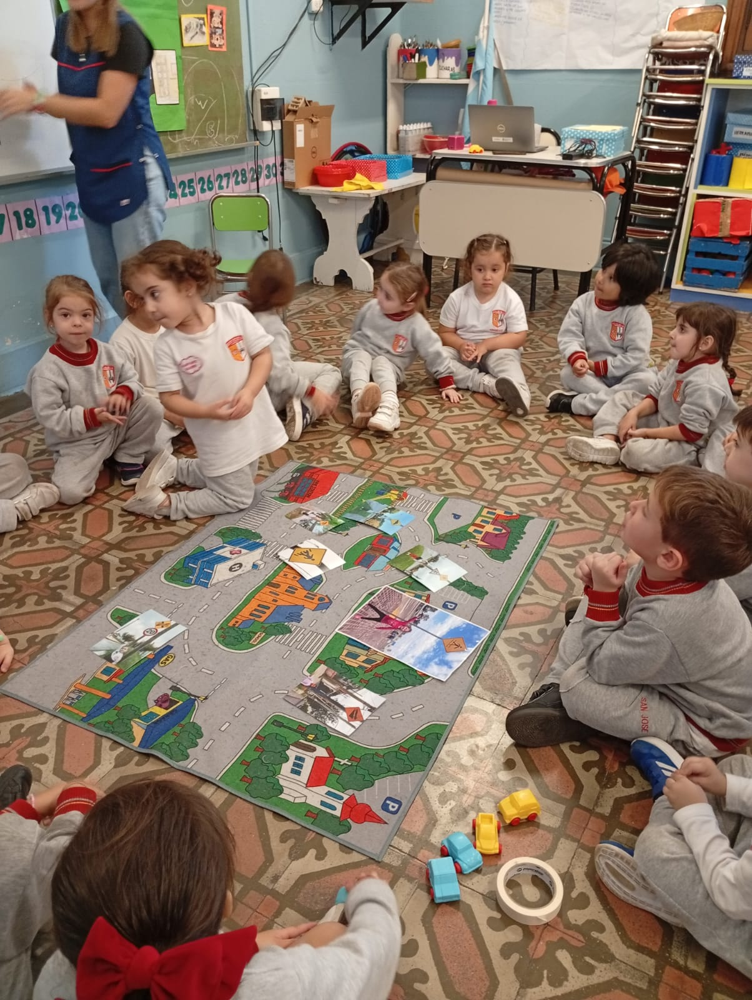
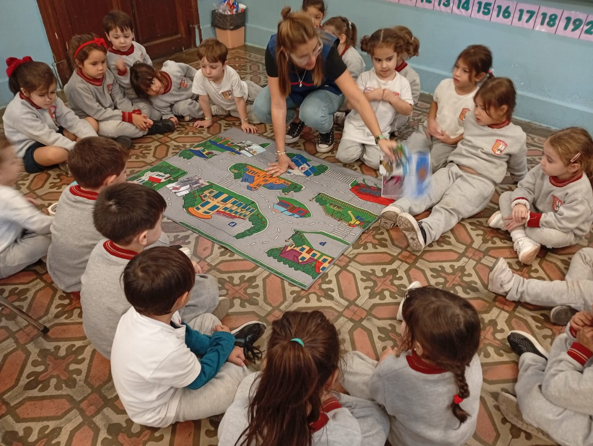

Nivel Inicial
Educación desde el comienzo
El niño, con su enorme potencial físico e intelectual, es un milagro frente a nosotros... (María Montessori)
El rol del Jardín
Se sostiene que el Jardín de Infantes inicia la puesta en juego del derecho al bien social que significa la educación...
Intencionalidad educativa
Es importante enfatizar la intencionalidad educativa del nivel, reconocer que se enseñan contenidos y comprender...
Salas activas
Actualmente se cuenta con salas de 4 y 5 años ofreciendo coherencia y continuidad de las propuestas formativas en las distintas áreas.
Galería del Jardín


